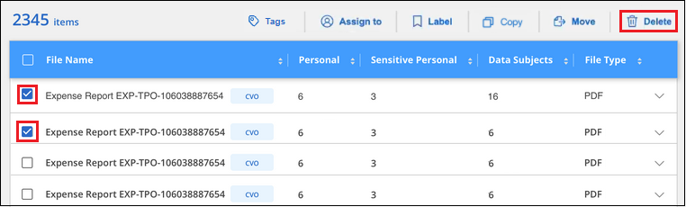

要求變更文件
要求變更文件 編輯此頁面
編輯此頁面 瞭解如何作出貢獻
瞭解如何作出貢獻管理您的私有資料
貢獻者
Cloud Data Sense提供多種方法來管理您的私有資料。有些功能可讓您更輕鬆地準備資料移轉、而其他功能則可讓您變更資料。
-
如果您想要複製特定資料並將其移至不同的NFS位置、可以將檔案複製到目的地NFS共用。
-
您可以將ONTAP 某個實體磁碟區複製到新的磁碟區、但只能在新的複製磁碟區中包含來自來源磁碟區的選定檔案。如果您正在移轉資料、但想要從原始Volume中排除某些檔案、這項功能非常實用。
-
您可以將檔案從來源儲存庫複製並同步處理至特定目的地位置的目錄。當您將資料從一個來源系統移轉至另一個來源系統時、如果來源檔案仍有一些最終活動、這項功能就很實用。
-
您可以將Data Sense正在掃描的來源檔案移至任何NFS共用區。
-
您可以刪除看起來不安全或風險太高的檔案、使其留在儲存系統中、或是您已識別為重複的檔案。

|
|
正在複製來源檔案
您可以複製Data Sense正在掃描的任何來源檔案。複本作業有三種類型、取決於您要完成的作業：
-
*將檔案*從相同或不同的磁碟區或資料來源複製到目的地NFS共用區。
如果您想要複製特定資料並將其移至不同的NFS位置、這項功能就很實用。
-
*將ONTAP 某個實體磁碟區*複製到同一個集合體中的新磁碟區、但只會在新的複製磁碟區中包含來源磁碟區中選取的檔案。
如果您要移轉資料、而且想要從原始Volume中排除某些檔案、這項功能非常實用。此動作使用 "NetApp FlexClone" 功能可快速複製磁碟區、然後移除您*未選取*的檔案。
-
*將檔案*從單一來源儲存庫（ONTAP 例如、S庫、S3儲存庫、NFS共用等）複製並同步到特定目的地（目標）位置的目錄。
當您要將資料從一個來源系統移轉至另一個來源系統時、這項功能非常實用。初始複本之後、服務會根據您設定的排程同步任何變更的資料。此動作使用 "NetApp Cloud Sync" 將資料從來源複製及同步至目標的功能。
將來源檔案複製到NFS共用區
您可以將Data Sense正在掃描的來源檔案複製到任何NFS共用區。NFS共用區不需要與Data Sense整合、您只需要知道NFS共用區的名稱、所有選取的檔案都會以「<host_name>//<share_path>」格式複製到該共用區。

|
您無法複製位於資料庫中的檔案。 |
-
您必須具有「帳戶管理」或「工作區管理」角色、才能複製檔案。
-
複製檔案需要目的地NFS共用允許從Data Sense執行個體存取。
-
您一次最多可以複製100、000個檔案。
-
在「資料調查結果」窗格中、選取您要複製的檔案、然後按一下「複製」。

-
若要選取個別檔案、請核取每個檔案的方塊（
 ）。
）。 -
若要選取目前頁面上的所有檔案、請核取標題列中的方塊（
 ）。
）。 -
若要選取所有頁面上的所有檔案、請核取標題列中的方塊（
）、然後在快顯訊息中顯示  ，單擊* Select all items in list（xxx items）（選擇列表中的所有項目（xxx項）
，單擊* Select all items in list（xxx items）（選擇列表中的所有項目（xxx項）
-
-
在_複製檔案_對話方塊中、選取*一般複本*索引標籤。

-
輸入NFS共用的名稱、所有選取的檔案將以「<host_name>//<share_path>」格式複製、然後按一下「* Copy*（複製*）」。
此時會出現一個對話方塊、顯示複製作業的狀態。
您可以在中檢視複製作業的進度 "「行動狀態」窗格"。
請注意、您也可以在檢視檔案的中繼資料詳細資料時複製個別檔案。只要按一下*複製檔案*即可。

將Volume資料複製到新Volume
您可以使用ONTAP NetApp _FlexClone®功能、複製Data Sense正在掃描的現有的SflexfVolume。這可讓您快速複製磁碟區、同時只包含您選取的檔案。如果您正在移轉資料、但想要從原始Volume中排除特定檔案、或是想要建立用於測試的磁碟區複本、則此功能非常實用。
新磁碟區會建立在與來源磁碟區相同的集合體中。在開始執行此工作之前、請先確定集合中有足夠的空間來容納這個新磁碟區。如有必要、請聯絡您的儲存管理員。
附註： FlexGroup 由於FlexClone不支援、因此無法複製這些實體。
-
您必須具有「帳戶管理」或「工作區管理」角色、才能複製檔案。
-
所有選取的檔案都必須來自同一個磁碟區、而且磁碟區必須處於線上狀態。
-
Volume必須來自Cloud Volumes ONTAP 於一個不全或內部部署ONTAP 的不全系統。目前不支援其他資料來源。
-
FlexClone授權必須安裝在叢集上。根據預設Cloud Volumes ONTAP 、此授權會安裝在不含作業系統的系統上。
-
在Data Investigation（資料調查）窗格中、選取單一*工作環境*和單一*儲存儲存庫*來建立篩選器、以確保所有檔案都來自同ONTAP 一個SIDE Volume。

套用任何其他篩選條件、以便您只能看到想要複製到新Volume的檔案。
-
在「調查結果」窗格中、選取您要複製的檔案、然後按一下「複製」。
-
若要選取個別檔案、請核取每個檔案的方塊（
）。 -
若要選取目前頁面上的所有檔案、請核取標題列中的方塊（
）。 -
若要選取所有頁面上的所有檔案、請核取標題列中的方塊（
）、然後在快顯訊息中顯示 ，單擊* Select all items in list（xxx items）（選擇列表中的所有項目（xxx項）
-
-
在_複製檔案_對話方塊中、選取* FlexClone *索引標籤。此頁面顯示將從磁碟區（您選取的檔案）複製的檔案總數、以及未從複製磁碟區中包含/刪除的檔案數目（您未選取的檔案）。

-
輸入新磁碟區的名稱、然後按一下* FlexClone *。
此時會出現一個對話方塊、顯示實體複本作業的狀態。
新的複製磁碟區會建立在與來源磁碟區相同的集合體中。
您可以在中檢視複製作業的進度 "「行動狀態」窗格"。
如果您一開始為來源磁碟區所在的工作環境啟用「Data」（資料感測）、選擇*「Map all Volumes」（對應所有磁碟區）或*「Map &分類所有磁碟區」*、則「Data Sense」（資料感測）會自動掃描新的複製磁碟區。如果您一開始並未使用上述任一選項、則如果您想要掃描此新Volume、就必須執行此操作 "手動在磁碟區上啟用掃描"。
將來源檔案複製並同步至目標系統
您可以將Data Sense正在掃描的來源檔案、從任何支援的非結構化資料來源複製到特定目標目的地位置的目錄 ("支援的目標位置Cloud Sync"）。在初始複本之後、檔案中的任何變更資料都會根據您設定的排程進行同步處理。
當您要將資料從一個來源系統移轉至另一個來源系統時、這項功能非常實用。此動作使用 "NetApp Cloud Sync" 將資料從來源複製及同步至目標的功能。
|
|
您無法複製及同步位於資料庫、OneDrive帳戶或SharePoint帳戶中的檔案。 |
-
您必須具有「帳戶管理」或「工作區管理」角色、才能複製及同步檔案。
-
所有選取的檔案都必須來自相同的來源儲存庫（ONTAP 例如、SFC磁碟區、S3磁碟區、NFS或CIFS共用區等）。
-
您需要啟動Cloud Sync 「還原」服務、並設定至少一個資料代理程式、以便在來源系統和目標系統之間傳輸檔案。請從開始檢閱Cloud Sync 《不整合需求 "快速入門說明"。
請注意Cloud Sync 、如果您在雲端部署資料代理程式、則該服務會針對您的同步關係另行收取服務費用。
-
在「資料調查」窗格中、選取單一*工作環境*和單一*儲存儲存庫*來建立篩選器、以確保所有檔案都來自相同的儲存庫。
套用任何其他篩選條件、以便只看到您要複製並同步到目的地系統的檔案。
-
在「調查結果」窗格中、勾選標題列中的方塊、以選取所有頁面上的所有檔案（
）、然後在快顯訊息中 按一下「選取清單中的所有項目（xxx個項目）」、然後按一下「複製」。
-
在_複製檔案_對話方塊中、選取*同步*索引標籤。

-
如果確定要將選取的檔案同步到目的地位置、請按一下*確定*。
此功能可在Cloud Manager中開啟。Cloud Sync
系統會提示您定義同步關係。來源系統會根據您在Data有意義中選取的儲存庫和檔案預先填入資料。
-
您需要選取目標系統、然後選取（或建立）您打算使用的Data Broker。請從開始檢閱Cloud Sync 《不整合需求 "快速入門說明"。
檔案會複製到目標系統、並根據您定義的排程進行同步。如果您選取一次性同步、則只會複製檔案並同步一次。如果您選擇定期同步、則檔案會根據排程進行同步。請注意、如果來源系統新增的檔案符合您使用篩選器建立的查詢、則這些_new檔案將會複製到目的地、並在未來進行同步處理。
請注意Cloud Sync 、從Data Sense中叫用某些常用的功能不再運作：
-
您無法使用*刪除來源上的檔案*或*刪除目標上的檔案*按鈕。
-
執行報告已停用。
將來源檔案移至NFS共用區
您可以將Data Sense正在掃描的來源檔案移至任何NFS共用區。NFS共用區不需要與Data Sense整合（請參閱） "正在掃描檔案共用"）。
如果目的地位置存在名稱相同的檔案、則不會移動該檔案。
|
|
您無法移動位於資料庫中的檔案。 |
-
您必須具有「帳戶管理」或「工作區管理」角色、才能移動檔案。
-
移動檔案需要NFS共用區允許從Data Sense執行個體IP位址存取。
-
一次最多可移動100、000個檔案。
-
在「資料調查結果」窗格中、選取您要移動的檔案。

-
若要選取個別檔案、請核取每個檔案的方塊（
）。 -
若要選取目前頁面上的所有檔案、請核取標題列中的方塊（
）。
-
-
在按鈕列中、按一下*移動*。

-
在「Move Files」（移動檔案_）對話方塊中、輸入NFS共用的名稱、所有選取的檔案將以「<host_name>//<share_path>'的格式移動、然後按一下「* Move Files*」。
請注意、您也可以在檢視檔案的中繼資料詳細資料時、移動個別檔案。只要按一下*移動檔案*即可。

正在刪除來源檔案
您可以永久移除看起來不安全或風險太高的來源檔案、使其留在儲存系統中、或是您已識別為重複檔案。此動作是永久性的、而且不會復原或還原。
您可以從「調查」窗格手動刪除檔案、或使用原則自動刪除檔案。
|
|
您無法刪除位於資料庫中的檔案。 |
刪除檔案需要下列權限：
-
NFS資料：匯出原則必須以寫入權限定義。
-
CIFS資料：CIFS認證需要具有寫入權限。
-
對於S3資料：IAM角色必須包含下列權限：「s 3：刪除物件」。
手動刪除來源檔案
-
您必須具有「帳戶管理」或「工作區管理」角色、才能刪除檔案。
-
一次最多可刪除100、000個檔案。
-
在「資料調查結果」窗格中、選取您要刪除的檔案。

-
若要選取個別檔案、請核取每個檔案的方塊（
）。 -
若要選取目前頁面上的所有檔案、請核取標題列中的方塊（
）。 -
若要選取所有頁面上的所有檔案、請核取標題列中的方塊（
）、然後在快顯訊息中顯示 ，單擊* Select all items in list（xxx items）（選擇列表中的所有項目（xxx項）
-
-
在按鈕列中、按一下*刪除*。
-
由於刪除作業是永久性的、因此您必須在後續的「刪除檔案」對話方塊中輸入「永久刪除」、然後按一下「刪除檔案」。
您可以在中檢視刪除作業的進度 "「行動狀態」窗格"。
請注意、您也可以在檢視檔案的中繼資料詳細資料時刪除個別檔案。只要按一下*刪除檔案*即可。

使用原則自動刪除來源檔案
您可以建立自訂原則來刪除符合原則的檔案。例如、您可能想要刪除包含敏感資訊且在過去30天內由Data Sense發現的檔案。
只有帳戶管理員可以建立原則來自動刪除檔案。
|
|
符合原則的所有檔案將一天永久刪除一次。 |
-
在「資料調查」頁面中、選取您要使用的所有篩選條件、以定義您的搜尋。請參閱 "篩選資料調查頁面中的資料" 以取得詳細資料。
-
當您以所需的方式擁有所有篩選特性之後、請按一下*從此搜尋建立原則*。
-
命名原則並選取原則可執行的其他動作：
-
輸入唯一的名稱和說明。
-
核取「自動刪除符合此原則的檔案」方塊、然後輸入*永久刪除*、確認您要使用此原則永久刪除檔案。
-
按一下「建立原則」。

-
新原則會出現在原則索引標籤中。符合原則的檔案會在原則執行時每天刪除一次。
您可以在中檢視已刪除的檔案清單 "「行動狀態」窗格"。